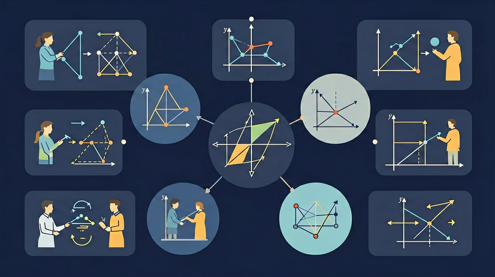

🌍 And（已知）：我们已经知道了上下左右的基本方位，在生活中能用这些词描述位置
⚡ But（问题）：但是，地图上为什么有东南西北？如何用坐标和方向精确描述一个地点的位置？
💡 Therefore（新知）：因此，今天我们学习东南西北四个方向，以及用行列坐标描述位置的方法
三年级数学 · 学会东南西北，成为方向小达人！

学会辨认方向，帮助小动物找到回家的路！完成关卡赢取⭐！
进度: 0%
旋转指南针，点击不同方向，学会辨认方向！
面向北方时：你的右手边是东，左手边是西，背后是南！
看地图，回答下面的问题！
把正确的方向标签拖到指南针上对应的位置！
可用标签（拖到下面的格子里）：
方向格子：
根据地图，描述动物的位置关系！
星星 ⭐ × 0
成就 🏅 × 0
地球有南极和北极，磁北极让指南针永远指向北方！
通常地图上方是北，但有些地图会特别标注指北针！
古代人很重视房子的朝向，南北朝向的房子采光好！
夜晚找到北极星就能判断北方方向！古代航海靠它！
除了4个基本方向，还有：东北、东南、西北、西南，一共8个方向！
恭喜！
先来测一测你已经掌握了哪些前置知识，帮助你更好地学习新内容！
第1题：面向北方时，你的右手边是哪个方向？
第2题：地图通常遵循什么方向规则？
方向就像地图的"密码"。记住东南西北的关键：面向升起太阳（东）时，右手是南，左手是北，背后是西。用这个"太阳规则"，永远不会搞混！
💡 用"迁移它"的视角：想想这个知识在哪些生活场景中还会用到？
分析为什么地图要规定"上北下南"而不是其他方向
判断：从A走到B向东，从B走回A应该向哪走？
画一张教室周边的简单地图，用方向词描述各建筑位置
完成学习后，用这两道题检验你对"位置与方向"的掌握程度！
第1题：小明家在学校的南边，那学校在小明家的哪边？
第2题：在坐标中，第3列第2行的位置用坐标表示是？
先独立作答，再点选项查看对错与错因。
小明从家出发，向东走了100米，又向北走了100米，最后向西走了100米。他现在的位置相对于家的方向是？
在地图上，如果A点在B点的正南方向，B点在C点的正东方向，那么A点相对于C点的方向是？
小红从学校出发，先向北走200米，再向东走200米，最后向南走200米。她现在的位置相对于学校的方向是？
在地图上，如果A点在B点的正西方向，B点在C点的正北方向，那么A点相对于C点的方向是____。
答案：西北
A点在C点的西北方向。
小明从家出发，向东走了300米，又向南走了400米，最后向西走了300米。他现在的位置距离家____米。
答案：400
小明最后的位置在家正南方向400米处。
在地图上，如果A点在B点的正东方向，B点在C点的正南方向，那么A点相对于C点的方向是？
请设计一个路线，使得从起点出发，经过若干次方向变化后，最终回到起点。
❓ 为什么地图上总是上北下南？
❓ 东南西北和前后左右到底有啥区别？
❓ 迷路时怎么用太阳判断方向？
学完这一课，这些问题你都能自信地回答。
🎯 能说出地图上四个基本方向的名称
🎯 能判断给定物体的相对位置关系
🎯 能分析简单路线图中的方向变化
✅ 强调'上北下南'是地图固定规则
💡 混淆方向词与上下左右方位
✅ 展示不同季节日出方位变化图
💡 生活观察经验不足
口诀：上北下南左西右东，太阳升起是正东
类比：方向就像教室座位表，固定方位才不会乱
And：学生知道前后左右
But：不知道东南西北如何确定
Therefore：学会用太阳判断基本方向
早晨太阳在东方，影子朝西；中午太阳在南方（中国地区），下午太阳在西方。比如：小明早上8点看到阳光从窗户左边射进来，说明左边是东，右边是西，前面就是北。记住口诀：上北下南，左西右东。
🌍 放学时太阳在操场西边，教学楼在东边投下长长的影子。妈妈说要拍夕阳得朝学校大门口方向，因为那是西边。
下午太阳在你右手边时，你正朝向哪个方向？
And：知道实际东南西北
But：看不懂地图上的方向标
Therefore：掌握地图与实地方向对应
地图永远是上北下南左西右东，像小鸟从天上往下看。比如动物园地图：入口在下方（南），熊猫馆在右上角就是东北方向。用直尺比一比，从喷泉到猴山是往左上方走，就是西北方向。
🌍 在商场看导览图时，找到‘您在此处’红点，想买奶茶往右上方走，就是往东北方向的3楼。
地图上学校在公园的正左边，实际公园在学校的哪个方向？
And：能说简单东南西北
But：不会描述斜方向
Therefore：学会东北/西南等组合方向
东北就是东和北中间的方向，像钟表1点的位置。比如：从教室出发，图书馆在东北方向200米处，就是往右上方走。西南=左下方，像4点半的时针方向。记住组合方向总是‘东/西’在前，‘南/北’在后。
🌍 外婆家在我们小区的东南方向，每次去都要斜着穿过中心花园，路过12号楼拐弯。
小明家在学校西北方向，学校在小明家的哪个方向？
And：会看简单方向
But：不会用方向帮人指路
Therefore：学会用标志物+方向描述路线
指路要说清：1.起点方向 2.走多远 3.标志物。比如：从校门口往东走50米到红绿灯（标志物），再往北走100米看到蓝色招牌（标志物）就是。注意用脚步数或分钟估计距离，说‘大约3首歌的时间’比‘200米’更易懂。
🌍 告诉快递叔叔：‘进小区大门往西南走，看到金色雕塑后往西拐，第3个单元就是’，这样比说‘7号楼’更清楚。
描述‘往东北走100米到喷泉，再往东走’缺少哪个要素？